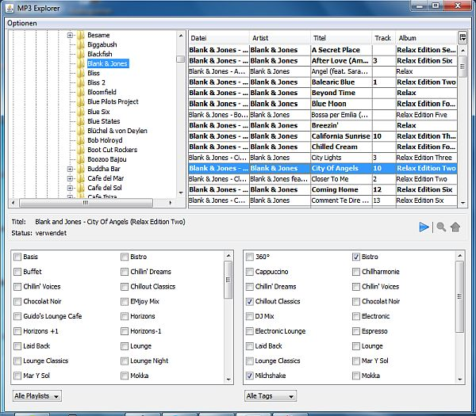

Überblick
Welche Titel meiner mp3-Sammlung verwende ich in welchen Playlists? Wie habe ich sie getaggt? Welche Titel verwende ich überhaupt? Diese Frage läßt sich am einfachsten mit dem MP3-Explorer beantworten.
Den MP3-Explorer öffnest Du über das -Menü: Dort gibt's den Punkt .
Benutzung
Oben links wählst Du ein oder mehrere Verzeichnisse aus in dem sich Deine mp3-Dateien befinden. Optional können auch Dateien aus Unterordnern einbezogen werden: Aktiviere dazu im -Menü.
Die mp3s aus dem ausgewählten Verzeichnis werden dann oben rechts mit den wichtigsten Informationen aus den ID3-Tags aufgelistet. Aus Performancegründen werden jedoch maximal 500 Titel angezeigt. Nach dem Auswählen eines Verzeichnisses gleicht Station Admin die Titel mit den bereits verwendeten Titeln ab und markiert bereits verwendete Titel in fetter Schrift. Je nach Anzahl der Titel kann es einige Sekunden dauern bis die Titel entsprechend angezeigt werden.
Rechsts oben - neben der -Spalte - befindet sich ein Icon mit dem Du ein Menü öffnen kannst und Spalten ein- oder ausblenden kannst. So ist z. B. die Dateigröße als Spalte verfügbar, wird jedoch standardmäßig nicht angezeigt.
Du kannst Dir diese Tabelle übrigens nach jeder beliebigen Spalten sortieren.
Wählst Du einen Titel aus überprüft Station Admin anhand der ID3-Tags
Durch einen Klick auf den Play-Button kannst Du den Titel mit einem externen MP3-Player anhören.
Wenn Du den Titel noch nicht verwendest kannst Du
Wird der Titel bereist verwendet oder wurde der Titel von Dir hochgeladen
Du kannst Titel zu Playlists hinzufügen oder aus Playlists entfernen in dem Du die dazugehörige Checkbox aktivierst bzw. die Auswahl aufhebst. Ebenso kannst Du den Titel taggen bzw. ein Tag entfernen in dem Du die dazugehörige Checkbox aktivierst bzw. die Auswahl aufhebst.
Beachte bitte dass beim Hinzufügen des Titels zu einer Playlist der Titel ans Ende der Playlist gestellt wird. Geänderte Playlists werden nicht automatisch gespeichert.
Du kannst in der Tabelle oben auch mehrere Titel auswählen. Unten angezeigt wird zwar stets nur der erste ausgewählte Titel, aber Du kannst über das Kontextmenü alle Titel in einem externen MP3-Player abspielen oder uploaden.